Redefining the NHL's Special Teams Metrics
By Matthew Takagi | January 09, 2026

For decades, the National Hockey League has relied on a simple, binary metric to evaluate power plays and penalty kills: PP% and PK%. A team either scores on a power play, or they don’t. Likewise, a team either kills a penalty, or they don’t. On a broadcast, or perhaps the NHL website, these are the only special teams statistics you’ll see.
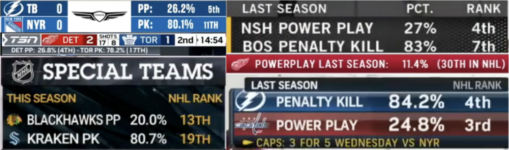The Traditionsal Metrics' Flaws
The calculation of PP% and PK% is rooted in the “opportunity” as the base unit of measurement.
- - Power Play Percentage (PP%) is simply the ratio of goals scored to power play opportunities received:
- - Penalty Kill Percentage (PK%) is the inverse, measuring the ratio of opportunities successfully defended:
These numbers are certainly straightforward for the average fan to interpret, but they’re certainly far from the entire story. These traditional metrics hide important context and ignore important events that take place, thus having the effect of misleading us about a team’s true effectiveness on special teams. Using data from the 2024-25 NHL regular season (sourced through Evolving Hockey), here are four reasons why:
1. Not all power play opportunities are created equal. Traditional PP% treats every power play opportunity the same, whether it’s 20 seconds of 5-on-4 or 100 seconds of 5-on-3 power play; traditional PP% cannot distinguish between different scenarios, even though these scenarios have drastically different scoring rates.
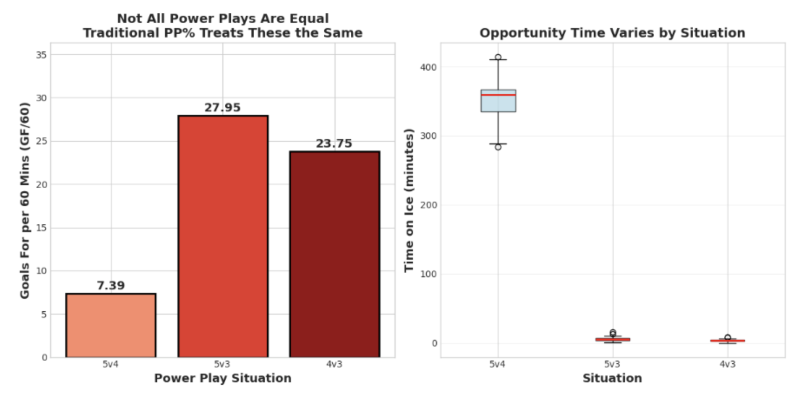Context matters. A team may excel at 5-on-3, but struggle at 5-on-4, even though 5-on-4 situations make up the vast majority of power play time. Teams that succeed in different situations may have similar PP% or PK% numbers, but they may also have very different special teams capabilities.
2. Traditional metrics only look at goals scored and goals allowed. They cannot distinguish between the sustainability of the overall process and the random variance naturally occurring with the small sample sizes that these statistics are forced to work with. By investigating expected goals (xG), we can see the difference between earned results and puck luck.
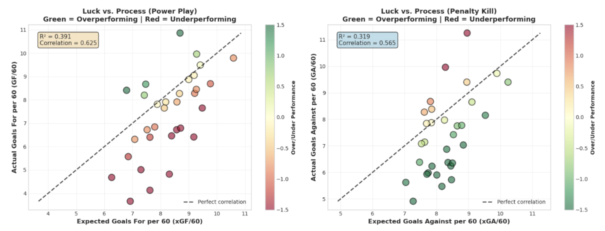The green dots in the above visualization show teams overperforming their expected goals; this may represent a team riding unsustainable shooting percentage on the power play, or a team relying on hot goaltending on the penalty kill. On the flip side, the red dots show teams underperforming; teams may create quality chances on their power plays but get unlucky with finishing or facing hot goaltenders, for example.
A team with a 20% PP% might be generating high-danger chances that will eventually convert (projecting sustainability), or they might be scoring on low-quality shots at an unsustainable rate (projecting regression). However, this isolated percentage cannot inform us of the likelihood of these two possibilities.
3. Shorthanded goals are completely ignored. Modern power plays and penalty kills are increasingly aggressive, using special teams structures such as the five-forward power play and “Power Kill” penalty kill. While a five-forward power play may indeed generate goals at a higher rate, it may also give up goals at a higher rate. The reality is that shorthanded goals happen regularly, and yet, traditional PP% and PK% both completely ignore this aspect of special teams play.
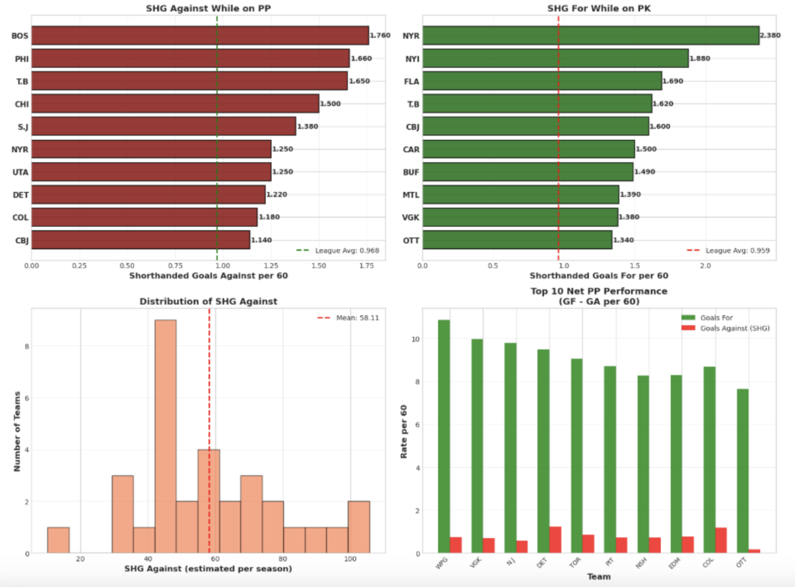Two teams could both have a 20% PP%, but if one allows twice as many shorthanded goals as the other, which power play is actually more valuable? Traditional PP% says they are equal.
4. Percentage variance reveals heavy amounts of randomness. If skill were the only factor contributing to special teams performance, we would expect to see tight clustering around the mean. Instead, the numbers reveal that there exists a wide variance in shooting and save percentages.
A Better Way: Calculating PP+ and PK+
Taking inspiration from baseball’s methodology of standardizing statistics (take wRC+, for instance), we can make interpretations of special teams units intuitive using the PP+ and PK+ metrics, where 100 is always league average.
The philosophy behind PP+ and PK+ is simple: address the flaws that exist in the current methodologies of evaluating special teams units in the present-day NHL.
- 1. Weigh different contexts and situations (5v4, 5v3, 4v3, etc.) by their expected scoring rates.
- 2. Combine the process and actual results of a special teams situation, where expected goals have a slightly higher weight than actual goals.
- 3. Hold special teams units accountable for shorthanded goals by factoring them into calculations of both PP+ and PK+
- 4. Standardize the scale for both metrics, so that the league average is 100 and standard deviation is approximately 15.
With these holes addressed, we can now move on to calculating the metrics for teams during the NHL’s 2024-25 regular season.
The Math
Step 1: Calculate Situational Weights
In order to standardize this part of the calculation, we can weigh each manpower situation based on league-average expected goals rates:
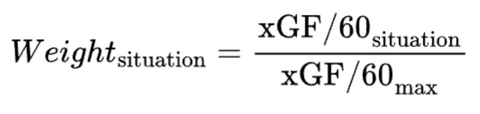Using 2024-25 data, we come up with the following weights:
Power Play: 5v3–1.000; 4v3–0.509; 5v4–0.297
Penalty Kill: 4v5–0.028; 3v4–0.007; 3v5–0.000
Step 2: Calculate Composite Score for Each Situation
For each team and situation, we create a composite metric that takes into account both the special teams process and special teams results.
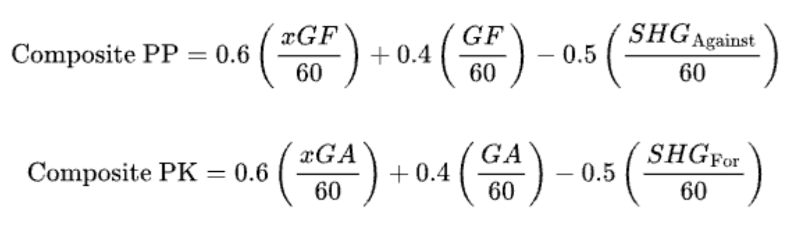We use a 60/40 split for expected and actual goals, the former of which representing the process and the latter representing the results. Research shows that xG can be more predictive than actual goals, but at the same time, the results do matter, and it is actual goals that ultimately matter for wins. Likewise, a 0.5 penalty/bonus is applied for shorthanded goals; although they are impactful events in any hockey game, full weighting in this scenario would be an overreaction to what is inevitably a small sample.
Step 3: Weight by Situation and Time
Then, for each team, we must ensure that they are each evaluated based on the actual mix of their special teams opportunities. We create a weighted score using the numbers calculated from the previous two steps in order to do so.
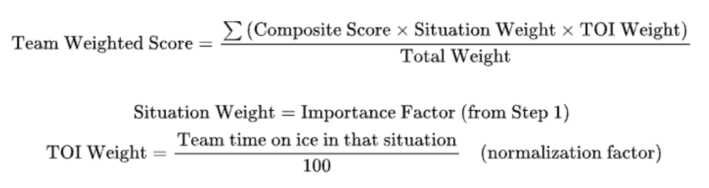Step 4: Normalize to Standardized Scale
Finally, we can use this team score to normalize the metric and present PP+ and PK+ on the aforementioned scale.
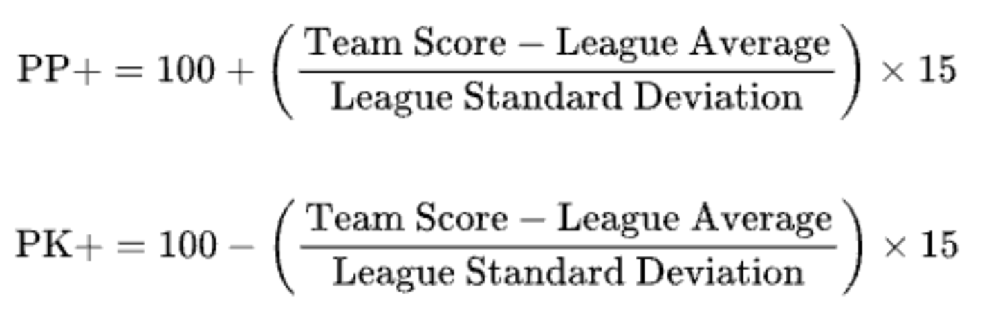By multiplying by 15, we create a standard deviation of approximately 15 points, making the scale easily interpretable and ensuring that 100 is exactly league average, 115 is one standard above average, and 85 is one standard deviation below average.
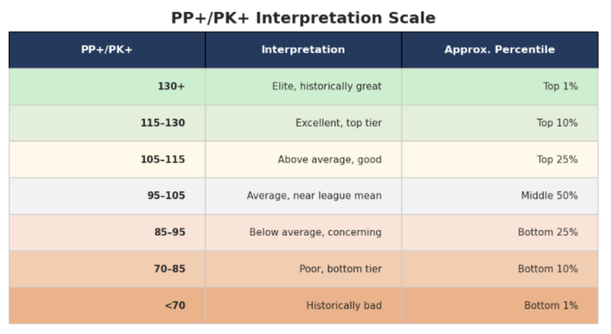Unlike traditional percentages, PP+ and PK+ are directly comparable across seasons and eras, as they account for league-wide trends (specifically, scoring rates).
The Results
Examining the leaguewide data, the math comes out as expected: both metrics are centered at 100, with a standard deviation of 15.
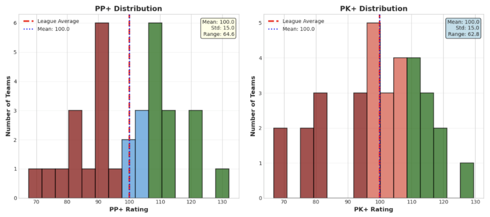A closer look at individual teams’ results reveals four distinct categories of teams, but a more telling conclusion. Of the 16 teams that qualified for the 2025 Stanley Cup Playoffs, 14 of them had an above average PP+ or PK+, with 8 of those being above average in both metrics. The two remaining teams, St. Louis and Minnesota, were the two wild card teams in the Western Conference; they were eliminated in the first round by Winnipeg and Vegas, respectively.
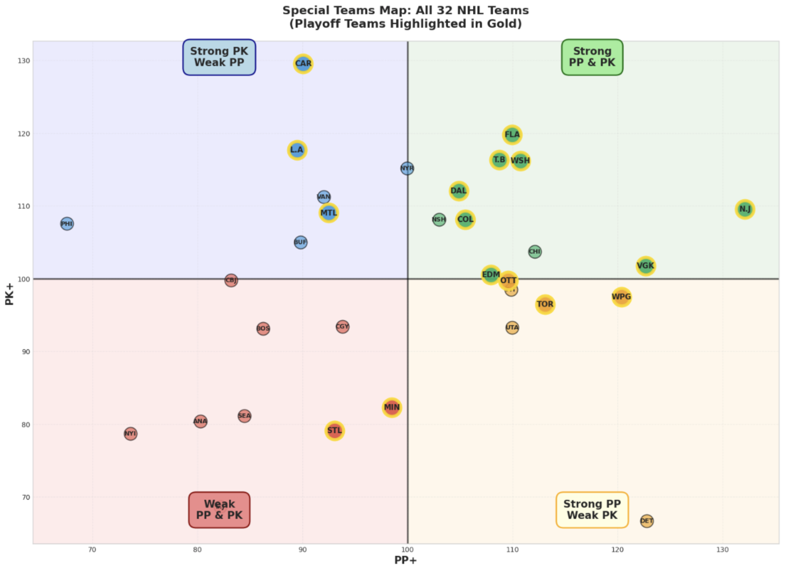Here’s a complete look at the calculated metrics for each team, ranked by PP+ and PK+.
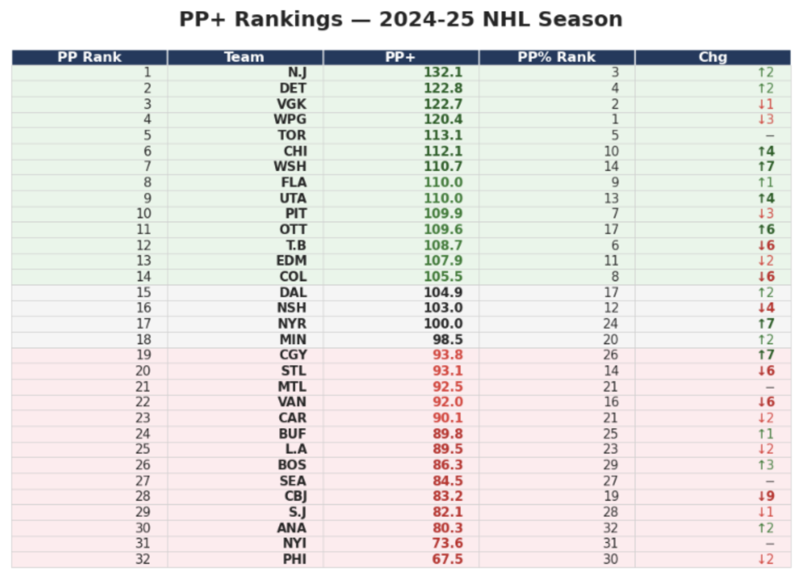 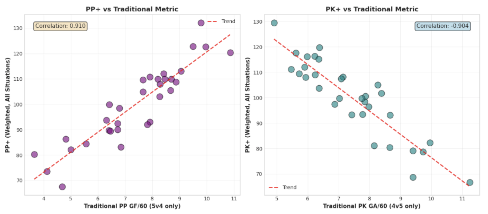
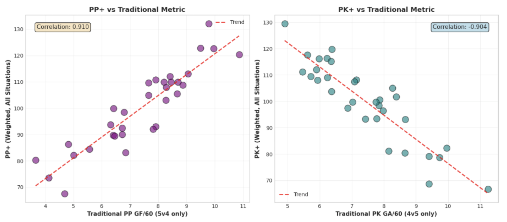
With a high correlation between PP+/PK+ and their traditional counterparts, there’s certainly some sort of similarity between the traditional statistics and our new metrics. However, with the additional factors that our new metrics take into account, we are able to turn a one-zone statistic into a more complete, three-zone metric.